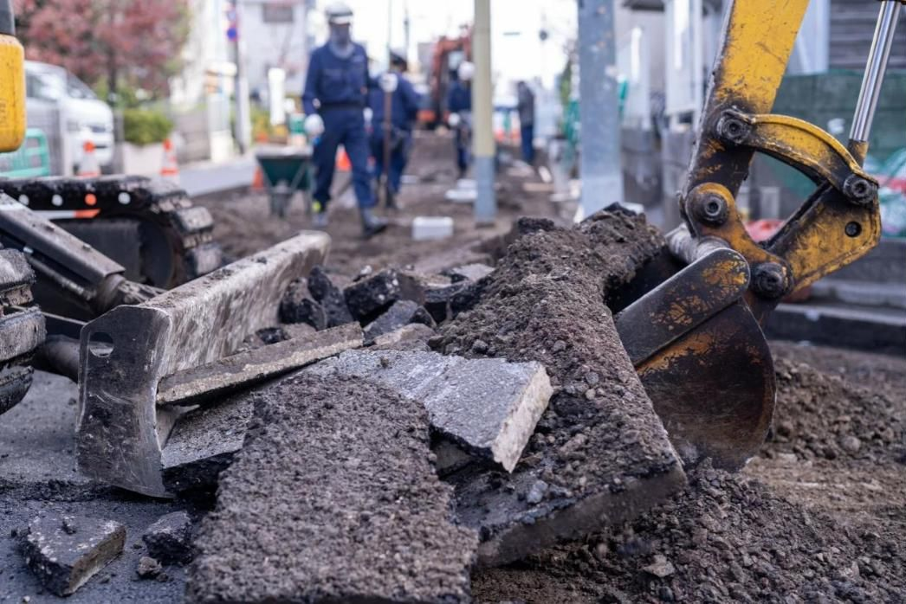

ガス配管復旧舗装工事の作業風景（古い舗装の撤去）
01 / PAVEMENT RESTORATION
ガス管が新しくなった、
その先の道まで。
地下のガス管を取り替えたあと、掘り起こされた道路を元のように利用できる状態へ整えるのが、復旧舗装工事です。久留米興業は、この舗装本復旧工事を東京を中心に埼玉・神奈川でも行っています。
古い舗装の撤去、路盤材の敷き均しと転圧、アスファルトの敷き均しと転圧など、各工程を重ねて道路を仕上げます。地下の設備が更新されるだけでなく、地上の道も普段の暮らしへ戻す。その最後の工程を担う仕事です。
実際の舗装作業の流れを見る